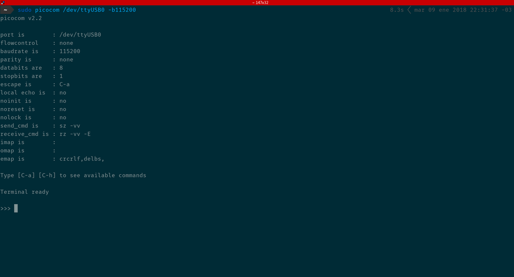

Micropython en la nodemcu
En bitson se nos ocurrió que podíamos empezar a jugar un poco con micropython, así qeu decidimos empezar usando la nodemcu.
Les voy a contar cómo instalar micropython en la placa, cómo conectarse y jugar con el led integrado. Manos a la obra!
Qué necesitamos
Para seguir este artículo vamos a necesitar:
- nodemcu
- picocom
- esptool
- firmware
Instalando picocom
Para Fedora:
sudo dnf install picocom
Para Debian y derivados:
sudo apt install picocom
Instalando esptool
Es conveniente instalarlo con el flag --user para que no quede instalado entre los paquetes del sistema. Pero tenés que asegurarte que tu usuario tenga permisos para acceder a los dispositivos serie (/dev/ttyUSB).
pip install esptool
Descargar el firmware
La última versión estable del firmware la podés encontrar en http://micropython.org/download en la sección Firmware for ESP8266 boards te descargás el binario para flashear la placa.
Al momento de escribir este artículo: http://micropython.org/resources/firmware/esp8266-20171101-v1.9.3.bin
Flasehando la nodemcu
Ahora que tenemos todo listo vamos a borrar la flash de la placa y depsués a cargar el nuevo firmware con esptool.
- Conectar la placa con un cable microUSB.
- esptool.py --port /dev/ttyUSB0 erase_flash
- esptool.py --port /dev/ttyUSB0 --baud 460800 write_flash --flash_size=detect 0 esp8266-20171101-v1.9.3.bin

Conectándose a la nodemcu con picocom
Ahora con picocom (o minicom o el que más te guste) con la placa conectada al USB ejecutás:
sudo picocom /dev/ttyUSB0 -b115200
Si tenés permisos sobre el dispositivo USB el picocom se va a conectar a la placa sin ningún tipo de problemas. Luego del mensaje Terminal ready presionamos la tecla enter y tendremos que ver el prompt del REPL de Python >>> y voilà!, micropython está instalado y funcionando en la nodemcu.
Fácil! Verdad?
Un paso más
Probemos que nuestra instalación de micropython funciona correctamente. Escribamos el famoso Hola Mundo!.
>>> print("Hola nodemcu") Hola nodemcu >>> 34 + 5 39 >>>
Que se haga la luz!
Genial! Todo funciona de maravillas. Hagamos algo un poco más interesante. Prendamos el led que tiene la placa.
>>> import machine >>> led = machine.Pin(2, machine.Pin.OUT) >>> led.off() >>> led.on() >>> led.off() >>>
Impecable! Todo funciona de maravillas. Ahora hagamos parpadear al led...
>>> import time >>> for i in range(5): ... led.off() ... time.sleep(0.5) ... led.on() ... time.sleep(0.5) ... ... ... >>>

Conectate!
Hagamos esto un poco más interesante. Conectémonos a la red WiFi de casa.
>>> import network >>> iface = network.WLAN(network.STA_IF) >>> iface.active() False >>> iface.active(True) #5 ets_task(4020ed88, 28, 3fff9f90, 10) >>> iface.active() True >>> iface.connect('ThiagoBenjamin', '<escribí-tu-clave') >>> iface.isconnected() True >>> iface.ifconfig() ('192.168.1.13', '255.255.255.0', '192.168.1.1', '192.168.1.1') >>>
done!
Referencias:
- https://www.prometec.net/micropython-nodemcu/#
- http://micropython.org/download
- http://docs.micropython.org/en/latest/esp8266/index.html
- http://www.makeredition.com/micropython-y-nodemcu/
- http://baitisj.blogspot.com.ar/2015/10/one-minute-tutorial-getting-started.html
- https://www.kenwalger.com/blog/iot/micropython-and-nodemcu-esp8266/
- https://learn.adafruit.com/micropython-basics-blink-a-led/blink-led